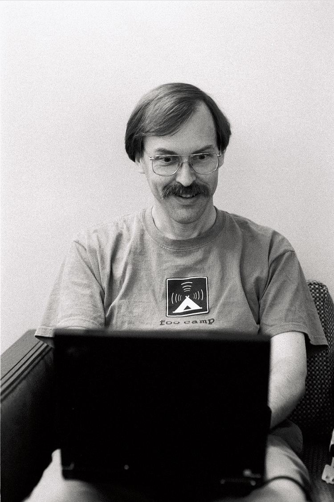

Larry Arnold Wall (born September 27, 1954)[1] is an American computer programmer and author. He created the Perl programming language.
Wall grew up in Los Angeles and then Bremerton, Washington. He majored in chemistry and music and later pre-medicine.
Larry took a hiatus of several years working in the university's computing center before graduating with a bachelor's degree in Natural and Artificial Languages.